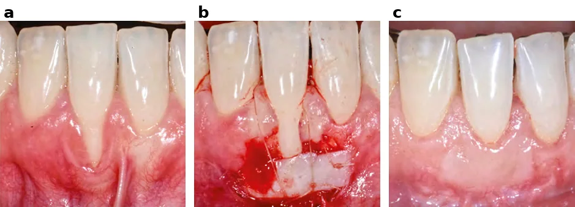
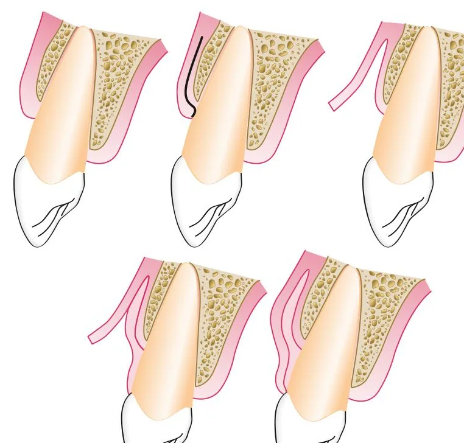

نسخه استخراجشده؛ ترجمه یا تأیید علمی انجام نشده است. وضعیت: captured
قطعهای از بافت اپیتلیوم + بافت همبند از کام برداشته میشود و روی بستر پریوستی در ناحیه گیرنده قرار میگیرد.

🔑 افزایش پهنای لثه کراتینیزه — این هدف اصلی و بیرقیب FGG است.
ناحیهای با لثه کراتینیزه ناکافی و تحلیل پیشرونده.
پیش از درمان ارتودنسی در ناحیه پرخطر.
افزایش عمق دهلیز.
اطراف ایمپلنت با موکوزای کراتینیزه ناکافی.
| مرحله | زمان | رخداد |
|---|---|---|
| پلاسماتیک | روز ۰ تا ۳ | 🔴 پیوند فقط با انتشار مایع از بستر تغذیه میشود — بحرانیترین مرحله |
| رگزایی | روز ۲ تا ۱۱ | عروق بستر به پیوند رشد میکنند |
| بلوغ | روز ۱۱ به بعد | بازآرایی بافت و کراتینیزاسیون |
⚠️ مرحله پلاسماتیک، دلیل تمام قواعد فنی FGG است: در این سه روز، پیوند هیچ خونرسانی مستقیمی ندارد و فقط با انتشار زنده میماند. پس:
پیوند باید نازک باشد (حدود ۱ تا ۱٫۵ میلیمتر) — پیوند ضخیم، لایه سطحیاش نکروز میشود.
تماس کامل و بدون فاصله با بستر — هر فضای خالی یا لخته زیر پیوند، انتشار را قطع میکند.
بیحرکتی مطلق — حرکت، عروق تازهساخته را پاره میکند.
فقط بافت همبند از زیر اپیتلیوم کام برداشته میشود و زیر فلپ ناحیه گیرنده قرار میگیرد.

| FGG | SCTG | |
|---|---|---|
| بافت برداشتهشده | اپیتلیوم + بافت همبند | فقط بافت همبند |
| محل قرارگیری | روی بستر پریوستی، برهنه | 🟢 زیر فلپ — پوشیده |
| خونرسانی | 🔴 فقط از یک سمت (بستر) | 🟢 از دو سمت (بستر + فلپ روی آن) |
| هدف اصلی | افزایش پهنای لثه کراتینیزه | 🟢 پوشش ریشه و ضخیم کردن بافت |
| نتیجه زیبایی | 🔴 ضعیفتر — «وصله» رنگی متفاوت | 🟢 عالی — رنگ و بافت هماهنگ |
| محل دهنده | 🔴 زخم باز در کام؛ ترمیم ثانویه، دردناکتر | 🟢 زخم بسته؛ ترمیم اولیه، راحتتر |
🔑 دو تفاوت، همه چیز را توضیح میدهد:
خونرسانی دوطرفه SCTG ⬅️ بقای بهتر پیوند و امکان پوشش سطح ریشه بدون خونرسانی (avascular).
پوشیده بودن SCTG زیر فلپ ⬅️ رنگ نهایی از فلپ خود بیمار میآید، نه از پیوند — و همین، نتیجه زیبایی برتر را میسازد.
⚠️ در FGG، پیوند برهنه است و رنگ خودش را حفظ میکند — به همین دلیل ظاهر «وصلهای» پیدا میکند و در ناحیه زیبایی مناسب نیست.
معمولاً از کانین تا مولر اول یا دوم کام.
فاصله ایمن از مارجین لثه؛ 🔑 وابسته به عمق قوس کام — در کام کمعمق و مسطح، شریان پالاتین بزرگ نزدیکتر و فضای ایمن باریکتر است.
پرهیز از ناحیه چینهای پالاتال قدامی (بافت نامناسب) و ناحیه مولر سوم.
| عارضه | مدیریت |
|---|---|
| درد — شایعترین شکایت، بهویژه در FGG | پلیت محافظ کام، مسکن، پانسمان |
| خونریزی | فشار مستقیم، ماده هموستاتیک، بخیه فشاری |
| آسیب شریان پالاتین بزرگ | 🔴 فشار مستقیم پیوسته؛ در صورت لزوم فشار روی محل خروج شریان |
| نکروز موضعی | برداشت بیشازحد ضخیم؛ پیشگیری بهتر از درمان |
🔑 مهمترین تفاوت راحتی بیمار: در FGG زخم کام باز میماند و با ترمیم ثانویه بهبود مییابد — دردناکتر و طولانیتر. در SCTG، اپیتلیوم سطحی حفظ میشود و زخم بسته میشود — ترمیم اولیه و راحتی بهمراتب بیشتر.
هدف پوشش ریشه است؟ ⬅️ SCTG (همراه با CAF یا تونل).
هدف فقط افزایش پهنای لثه کراتینیزه است و ناحیه زیباییمحور نیست؟ ⬅️ FGG.
ناحیه زیبایی است؟ ⬅️ SCTG، حتی اگر هدف ضخیم کردن باشد.
بیمار محل دهنده را نمیپذیرد؟ ⬅️ ماتریکس کلاژنی یا ماتریکس درم بدون سلول (ADM).
⚠️ اشتباه رایج ۱: مرحله پلاسماتیک (۳ روز نخست) بحرانیترین مرحله بقای پیوند است.
⚠️ اشتباه رایج ۲: SCTG خونرسانی دوطرفه دارد؛ FGG فقط از بستر.
⚠️ اشتباه رایج ۳: در FGG زخم کام باز میماند؛ در SCTG بسته میشود.